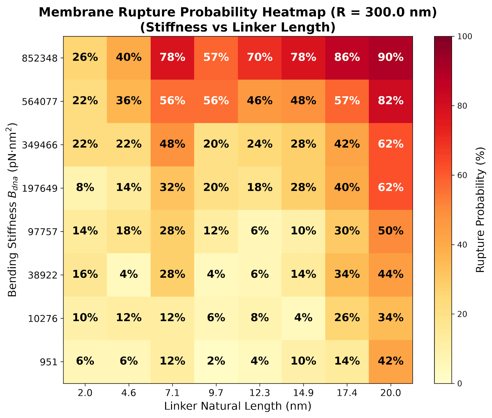
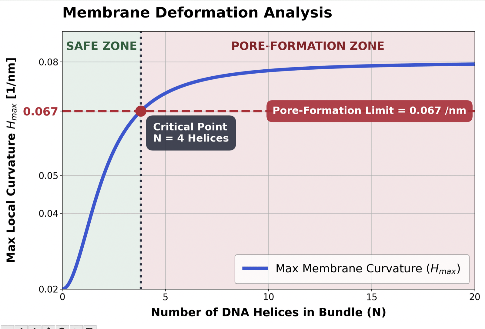
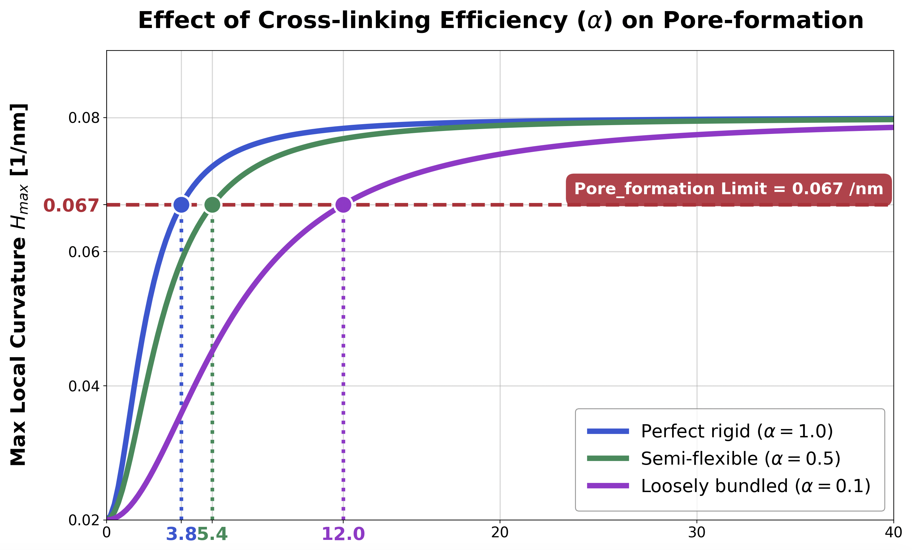

SIMULATION
Overview
This page presents two complementary mechanical models: a 2D coarse-grained simulation that screens for model-defined local pore-formation events, and a 3D reduced free-energy model that estimates representative membrane-deformation shapes. We also assess the thermodynamic feasibility of the HCR design for building DNA Bundles.
1. Membrane Deformation Models
1.1 MD-CG Simulation in 2D Environment


-
1
DNA bundle
-
2
TEG linker
-
3
Cholesterol
-
4
Lipid membrane
The 2D model is used as a computational screening system to identify practical design regions for three programmable parameters: vesicle radius (R), DNA Bundle bending rigidity (BDNA), and linker rest length (l0). Our goal is to estimate which parameter combinations are more likely to produce the model-defined local pore-formation event and thereby guide the design of DNA Bundles for membrane loading.
Each trajectory is evolved as a finite-time overdamped Brownian coarse-grained calculation while the DNA Bundle approaches the membrane, using a Brownian-dynamics framework [4]. The readout is the occurrence of a model-defined local pore-formation event: a local spring-extension threshold in the discrete membrane model. This event is used only as a pore-initiation proxy; the 2D model does not resolve physical pore growth, resealing, leakage, or vesicle lysis. Physical pore studies describe additional mechanisms beyond this model-defined criterion [16–22]. Detailed equations, parameters, and procedure are in the Appendix.
2D Comparison: Linker Length, Bundle Bending Rigidity, and Vesicle Size
Linker rest length l0 changes both linker mechanics and the membrane-capture range (26–44 nm across the documented sweep); its influence is not limited to flexibility or distance.
Key trends and interpretation
Across the present 2D parameter screen, high DNA Bundle bending rigidity was commonly associated with the model-defined local pore-formation event. For the small-vesicle condition (\(R=50\) nm), shorter linkers were more favorable. For the large-vesicle condition (\(R=200\) nm), longer linkers were more favorable.
For small vesicles, a short linker is expected to transmit the mechanical loading of a rigid DNA Bundle more directly to a localized membrane region. A longer linker can provide additional relative compliance and attenuate this localized loading. In contrast, for large vesicles, a longer linker increases the model-defined cholesterol–membrane capture range and can allow membrane coupling over a broader accessible region. These are model-level interpretations of the observed trends, not direct evidence of complete membrane rupture or lysis.
Representative trajectories visualize the contrasting membrane-loading behaviors underlying these design trends.
Small vesicle (R = 50 nm)
BDNA = 6.21 × 105 pN·nm2

Vesicle radius: R = 50 nm
DNA Bundle bending rigidity: BDNA = 6.21 ×
105 pN·nm2
Linker rest length: l0 = 2.5 nm

Vesicle radius: R = 50 nm
Available GIF bending rigidity: BDNA ≈ 4.36 ×
105 pN·nm2
(target: 6.21 × 105)
Linker rest length: l0 = 15.0 nm
BDNA = 9.51 × 102 pN·nm2

Vesicle radius: R = 50 nm
DNA Bundle bending rigidity: BDNA = 9.51 ×
102 pN·nm2
Linker rest length: l0 = 2.5 nm.

Vesicle radius: R = 50 nm
DNA Bundle bending rigidity: BDNA =
9.51 × 102 pN·nm2
Linker rest length: l0 = 15.0 nm
Large vesicle (R = 200 nm)
BDNA = 6.21 × 105 pN·nm2

Vesicle radius: R = 200 nm
Available GIF bending rigidity: BDNA ≈ 4.36 ×
105 pN·nm2
(target: 6.21 × 105)
Linker rest length: l0 = 2.5 nm

Vesicle radius: R = 200 nm
DNA Bundle bending rigidity: BDNA = 6.21 ×
105 pN·nm2
Available GIF linker rest length: l0 = 20.0 nm
(target: 15.0 nm).
BDNA = 9.51 × 102 pN·nm2

Vesicle radius: R = 200 nm
DNA Bundle bending rigidity: BDNA =
9.51 × 102 pN·nm2
Linker rest length: l0 = 2.5 nm

Vesicle radius: R = 200 nm
DNA Bundle bending rigidity: BDNA =
9.51 × 102 pN·nm2
Available GIF linker rest length: l0 = 20.0 nm
(target: 15.0 nm).
Model-Defined Local Pore-Formation-Event Probability
The heatmaps quantify the fraction of simulated trajectories that reached the model-defined local pore-formation event for each combination of linker rest length and DNA Bundle bending rigidity.



1.2 3D Reduced Free-Energy Model
Why a reduced 3D model?
The 2D CG-MD model compares how DNA Bundle and membrane conditions affect local interactions, but it does not show how the membrane wraps around a Bundle or how deformation spreads in three dimensions. Evaluating every condition with time-evolving 3D CG-MD would be computationally demanding for this project, so we use a 3D Reduced Free-Energy Model instead.
What the model calculates
For the R0 = 50 nm reference condition, the model estimates a candidate deformation shape from prescribed cholesterol-mediated adhesion, DNA Bundle bending, membrane bending, and membrane-tension terms [1–3, 5–11]. Cholesterol-modified DNA structures have been used for membrane binding and remodeling [12–15].
\(E_{\mathrm{adhesion}}\) represents cholesterol-mediated effective adhesion.
\(E_{\mathrm{DNA,bend}}\) is the energetic cost of bending the DNA Bundle.
\(E_{\mathrm{membrane,bend}}\) is the local membrane-curvature cost.
\(E_{\mathrm{membrane,tension}}\) is the cost of deforming a tension-bearing membrane.
The full mathematical formulation, numerical update rules, and model-specific assumptions are described in the 3D model details in the Technical Appendix.
Interactive 3D Deformation Visualization
The GLB and deformation views show local membrane deformation at the DNA Bundle contact region. Its shape reflects the competition between effective adhesion, Bundle flexibility, membrane bending elasticity, and membrane tension. The GLB can be rotated for viewing but is static, not a time-evolving simulation. Its color shows visualization-only local curvature, not a pore-formation test or rupture threshold.


-
1
DNA bundle
-
2
Cholesterol anchors
-
3
Lipid membrane

Bundle Radius as a Geometric Design Parameter
DNA Bundle geometry is an important factor in three-dimensional membrane deformation. The Bundle radius determines the width of the membrane-contact region and the geometric extent over which the membrane must bend around the Bundle. In contrast, effective bending rigidity determines how strongly the Bundle itself resists bending. These two Bundle properties therefore affect deformation through different mechanisms.


A wider DNA Bundle changes the contact geometry and distributes membrane deformation across a broader region. This radius comparison is a qualitative geometric illustration, not a quantitative radius-sweep result or a prediction of pore formation. Bundle radius is a geometrically important input parameter to include in future parameter sweeps.
Phenomenological Helix-Count Scaling Analysis
This is a separate design-screening analysis, not a direct output of the static 3D free-energy model. The two graphs illustrate how assumed DNA Bundle helix-count and coupling scenarios relate to a selected local-curvature comparison level. Detailed equations, assumptions, and source provenance are provided in the 3D model details in the Technical Appendix.


This model does not resolve lipid diffusion, thermal fluctuations, pore nucleation, pore growth, or membrane repair. The static 3D model and helix-number scaling analysis are complementary but separate analyses; their predicted helix numbers are model-dependent design guides, not experimental rupture thresholds.
References
[1] Helfrich, W. Elastic properties of lipid bilayers: theory and possible experiments. Z. Naturforsch. C 28, 693–703 (1973). DOI
[2] Seifert, U. Configurations of fluid membranes and vesicles. Adv. Phys. 46, 13–137 (1997). DOI
[3] Seifert, U. & Lipowsky, R. Adhesion of vesicles. Phys. Rev. A 42, 4768–4771 (1990). DOI
[4] Ermak, D. L. & McCammon, J. A. Brownian dynamics with hydrodynamic interactions. J. Chem. Phys. 69, 1352–1360 (1978). DOI
[5] Evans, E. & Rawicz, W. Entropy-driven tension and bending elasticity in condensed-fluid membranes. Phys. Rev. Lett. 64, 2094–2097 (1990). DOI
[6] Rawicz, W., Olbrich, K. C., McIntosh, T., Needham, D. & Evans, E. Effect of chain length and unsaturation on elasticity of lipid bilayers. Biophys. J. 79, 328–339 (2000). DOI
[7] Dimova, R. Recent developments in the field of bending rigidity measurements on membranes. Adv. Colloid Interface Sci. 208, 225–234 (2014). DOI
[8] Hagerman, P. J. Flexibility of DNA. Annu. Rev. Biophys. Biophys. Chem. 17, 265–286 (1988). DOI
[9] Kauert, D. J., Kurth, T., Liedl, T. & Seidel, R. Direct mechanical measurements reveal the material properties of three-dimensional DNA origami. Nano Lett. 11, 5558–5563 (2011). DOI
[10] Lee, J. Y. et al. Rapid Computational Analysis of DNA Origami Assemblies at Near-Atomic Resolution. ACS Nano 15, 1002–1015 (2021). DOI
[11] Doye, J. P. K. et al. Coarse-graining DNA for simulations of DNA nanotechnology. Phys. Chem. Chem. Phys. 15, 20395 (2013). DOI
[12] Langecker, M. et al. Synthetic lipid membrane channels formed by designed DNA nanostructures. Science 338, 932–936 (2012). DOI
[13] Khmelinskaia, A., Mücksch, J., Petrov, E. P., Franquelim, H. G. & Schwille, P. Control of Membrane Binding and Diffusion of Cholesteryl-Modified DNA Origami Nanostructures by DNA Spacers. Langmuir 34, 14921–14931 (2018). DOI
[14] Franquelim, H. G., Khmelinskaia, A., Sobczak, J.-P., Dietz, H. & Schwille, P. Membrane sculpting by curved DNA origami scaffolds. Nat. Commun. 9, 811 (2018). DOI
[15] Zuraw-Weston, S. E. et al. Membrane Remodeling by DNA Origami Nanorods: Experiments Exploring the Parameter Space for Vesicle Remodeling. Langmuir 37, 6219–6231 (2021). DOI
[16] Litster, J. D. Stability of lipid bilayers and red blood cell membranes. Phys. Lett. A 53, 193–194 (1975). DOI
[17] Zhelev, D. V. & Needham, D. Tension-stabilized pores in giant vesicles: determination of pore size and pore line tension. Biochim. Biophys. Acta Biomembr. 1147, 89–104 (1993). DOI
[18] Sandre, O., Moreaux, L. & Brochard-Wyart, F. Dynamics of transient pores in stretched vesicles. Proc. Natl Acad. Sci. USA 96, 10591–10596 (1999). DOI
[19] Karatekin, E. et al. Cascades of transient pores in giant vesicles: line tension and transport. Biophys. J. 84, 1734–1749 (2003). DOI
[20] Portet, T. & Dimova, R. A new method for measuring edge tensions and stability of lipid bilayers: effect of membrane composition. Biophys. J. 99, 3264–3273 (2010). DOI
[21] Evans, E. & Heinrich, V. Dynamic strength of fluid membranes. C. R. Phys. 4, 265–274 (2003). DOI
[22] Leontiadou, H., Mark, A. E. & Marrink, S. J. Molecular dynamics simulations of hydrophilic pores in lipid bilayers. Biophys. J. 86, 2156–2164 (2004). DOI